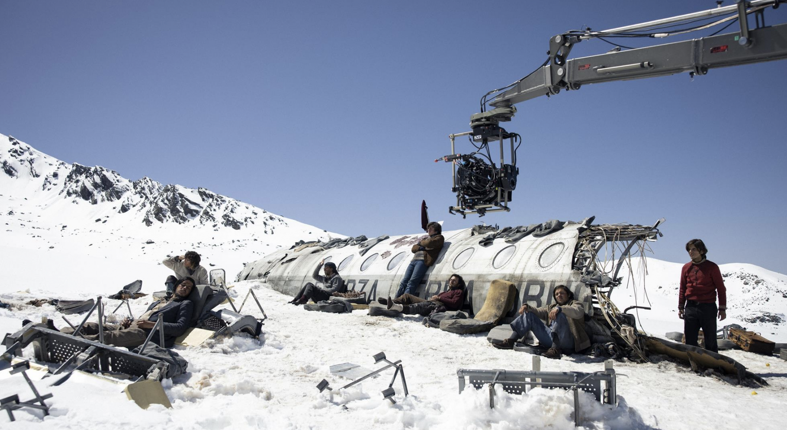

El milagro de Los Andes
La sociedad de la nieve es una pelicula dramática española de 2023, muestra los hechos que sucedieron el 13 de octubre de 1972 cuando el vuelo 571 de la Fuerza Aérea Uruguaya se estrelló en El Valle de las Lágrimas, ubicado en la cordillera de los Andes en Chile. En este vuelo viajaban 45 personas, entre ellas 19 miembros del equipo de rugby Old Christians Club. Los pasajeros estuvieron en este valle 72 días sufriendo las inclemencias del clima, además de pasar hambre y diversas situaciones que pusieron en riesgo su vida. Es una gran historia de supervivencia.

Sinopsis
"La Sociedad de la Nieve" narra la desgarradora historia del accidente aéreo en los Andes, donde los supervivientes se ven forzados a depender unos de otros para sobrevivir en el remoto corazón de la cordillera. Es más que una película; se ha convertido en un fenómeno cultural que ha desencadenado debates sobre representación, respeto histórico y la industria cinematográfica. Basada en una historia real, es un caso que tiene todos los componentes para emocionar, hacer sonreír, lagrimear, entusiasmar y conmover. Finalmente, queda claro que "La Sociedad de la Nieve" no es simplemente una repetición de historias pasadas, sino una obra que ha sabido encontrar su propio lugar en la conciencia colectiva y en la historia del cine.
Locación
La película que se centra en la tragedia de los Andes fue grabada en las montañas de Sierra Nevada, en Granada, España. Sin embargo, esta locación tuvo que ser modificada para acercarse a lo que realmente vivieron las víctimas. Como no había nieve durante el rodaje, se tuvo que crear el paisaje nevado artificialmente. Para esto, se necesitó una combinación de materiales como polímero y celulosa. Allí construyeron una reproducción de la montaña de más de 90 metros cuadrados, así como un escenario a 2000 metros de altura para rodar las escenas interiores y de tormenta.
Otras locaciones en las que se grabó:
- Las tomas que involucraron a los familiares de las víctimas fueron grabadas en Montevideo, respetando la autenticidad del proyecto y el compromiso del cineasta por narrar la historia con exactitud.
- Si bien los actores no filmaron realmente en la Cordillera de los Andes, un equipo liderado por Alejandro Fadel acudió al lugar del accidente para grabar valiosas tomas de apoyo que luego fueron intercaladas con las de Sierra Nevada a lo largo de la película.
Producción
"La sociedad de la nieve" es una pelicula dirigida y escrita por Juan Antonio Garcia Bayona. Bayona descubrió el libro de Vierci "La sociedad de la nieve", y compró los derechos del libro al final del rodaje. Ademas de J.A Bayona, formaron parte de la producción Belén Atienza y Sandra Hermida. Debido a las necesidades técnicas que tiene esta película, a J.A. Bayona le costó muchísimo encontrar alguien que financie la película. Fue Netflix quien apostó al proyecto y decidió invertir unos 60 millones de euros.
El guion es de J.A. Bayona, Bernat Vilaplana, Jaime Marques, Nicolás Casariego (a partir de la novela de Pablo Vierci).Los realizadores grabaron más de 100 horas de entrevistas con todos los supervivientes vivos.Los actores tuvieron contacto con los supervivientes y las familias de las víctimas. A diferencia de las películas de 1976 y 1993 "Supervivientes de los Andes" y "¡Viven!"", La sociedad de la nieve es la primera adaptación que utiliza los nombres reales de todos los pasajeros fallecidos.
Reparto
El reparto está compuesto por actores uruguayos y argentinos. Sus actores principales fueron:
- Enzo Vogrincic. Su papel es el de Numa Turcatti. Encarna al narrador de la historia y uno de los protagonistas del film. Estudiante de derecho de 24 años, viajó a Chile por invitación de sus amigos. No jugaba al rugby, sino al fútbol, y apenas conocía al resto de los pasajeros. Salió ileso del choque e inmediatamente se entregó al servicio del grupo. Participó de varias expediciones.
- Agustin Pardella. Su papel es el de Nando Parrado. Estudiante y jugador de rugby de 22 años. Viajó junto a su madre, su hermana y sus amigos íntimos. Tras el accidente, quedó inconsciente por tres días a causa de una fuerte conmoción cerebral. Participó junto a Canessa de la expedición final para buscar ayuda.
- Matías Recalt. Su papel es el de Roberto Canessa. Estudiante de medicina y jugador de rugby de 19 años. Ocurrido el accidente, asumió el papel de médico y prestó cuidados a los heridos. Participó junto a Parrado de la expedición final para buscar ayuda.
- Esteban Kukuriczka. Su papel es el de Fito Strauch, estudiante de Ingeniería Agrónoma de 24 años que iba en el avión con sus primos. Él inventó la máquina para derretir el hielo y las gafas de sol que utilizaron.
- Valentino Alonso. Su papel es el de Pancho Delgado, estudiante de Derecho de 24 años. Convenció a Numa Turcatti, su mejor amigo, para acompañarlo en el viaje.
- Felipe González Otaño. Su papel es el de Carlos Páez. Este tenía 18 años en el momento del accidente. Enseñó a sus compañeros a coser para crear el saco de dormir que usaron los supervivientes que salieron de expedición en busca de ayuda.
- Francisco Romero. Su papel es el de Daniel Fernández, un estudiante de ingeniería agronómica de 26 años. Junto con sus primos Eduardo y Fito Strauch fueron los que tuvieron que repartir carne humana entre los demás, asumiendo también un liderazgo en el grupo.
Datos curiosos
- Bayona recreó en tres sets diferentes los lugares donde trascurrieron la mayor parte de las escenas que se situaron en la nieve, a través de efectos especiales que lograron darle la naturalidad que representaron los largos días de grabación. Incluso, los actores pasaron frío para captar la simpleza de las expresiones.
- Una de responsables de los efectos especiales de la película, Laura Pedro, explicó a Infobae España:
Nos dimos cuenta de que la película iba a requerir de efectos visuales invisibles. Obviamente no podíamos rodar allí, porque es un lugar inaccesible y uno de los sitios más peligrosos donde se puede estar. Entonces, ahí empezamos a valorar de qué manera se podía llevar a cabo esta película con nuestra aportación sin que se notara.
- Bayona se puso en contacto con los protagonistas reales: Pablo Vierci lo conectó con los supervivientes, que se reunieron para analizar la propuesta como hubieran hecho cuando estaban en la cordillera. También se pudo contar con el apoyo de los familiares de los que no volvieron de los Andes. Así, muchos de los protagonistas de esta historia trabajaron mano a mano con Bayona para poder transmitir los hechos con mayor veracidad.
- Algunos de los sobrevivientes reales como Parrado y Canessa hicieron cameos en la película.
- En la búsqueda de crear verosimilitud y acercarse a lo que realmente vivieron los sobrevivientes de la tragedia, los actores se comprometieron a una estricta dieta para bajar de peso. Bajo la supervisión de todo un equipo médico, la máxima curiosidad es que la película fue filmada en orden cronológico y, por ende, el deterioro físico de los actores es perceptible a medida que avanza la película.
- Esta película causó revuelo por todo el mundo. La Sociedad de la Nieve comenzó a generar en redes sociales un "fandom", es decir, un grupo de aficionados del filme y actores del mismo. Sin embargo, estos no se han visto limitado únicamente al producto audiovisual sino que también han expandido su interés y afecto hacia los protagonistas reales de la historia.
Premios
- Festival Internacional de Cine de San Sebastián: Ciudad de Donostia / Premio del Público de San Sebastián a la Mejor Película
- Festival de Cine de Mill Valley: Premio del público / ¡Viva el cine! - Narrativa
- Festival de Cine de Middleburg:Premio del público / Largometraje internacional
- Premios de Música de Hollywood de Medios de Comunicación:Mejor banda sonora original: película independiente (lengua extranjera)
- Premios Feroz:
- Mejor dirección
- Mejor tráiler
- Medallas del CEC:
- Mejor guión adaptado
- Mejor montaje
- Mejor fotografía
- Premios Goya. "La sociedad de la nieve" se coronó con 12 estatuillas:
- Mejor película
- Mejor dirección
- Mejor actor revelación: Matías Recalt
- Mejor dirección de producción
- Mejor montaje
- Mejor música original
- Mejor fotografía
- Mejor dirección artística
- Mejor diseño de vestuario
- Mejor maquillaje y peluquería
- Mejor sonido
- Mejores efectos especiales
- Premios Sant Jordi:Mejor película española
- Es importante destacar que "La sociedad de la Nieve" fue nominada a los Oscars (2024) a mejor película internacional.
Haz click aqui para ver fotografías reales de la tragedia de los Andes
Contacto
Para el segundo parcial se va a encontrar aqui un formulario de contacto, para comentarios o consultas.